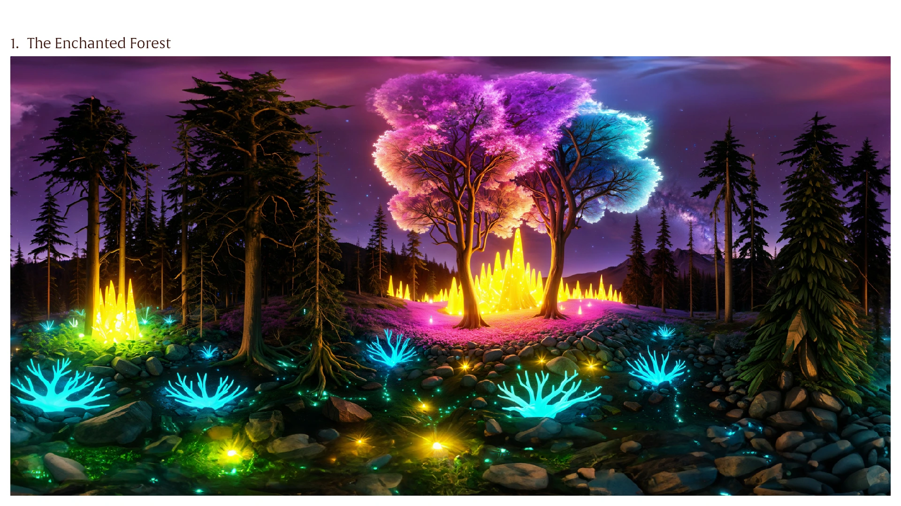
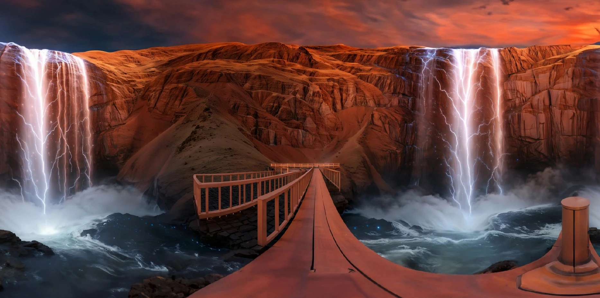
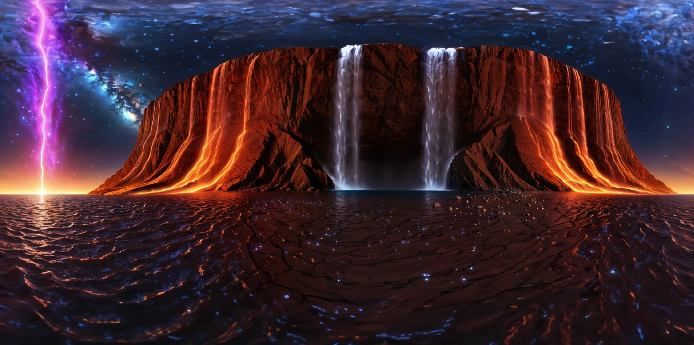
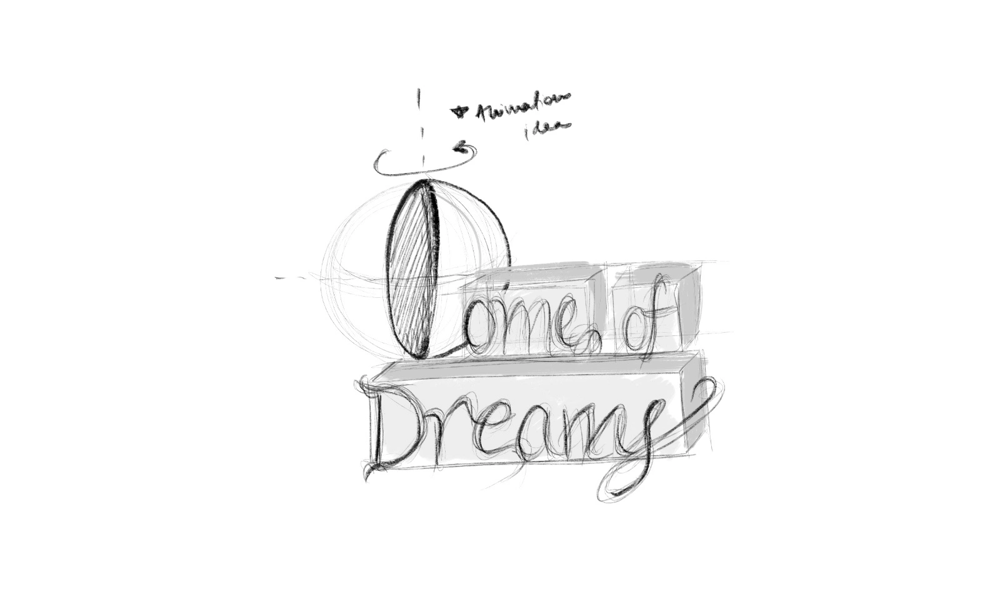
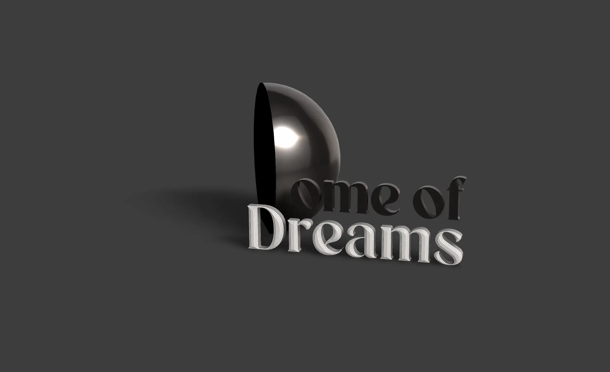
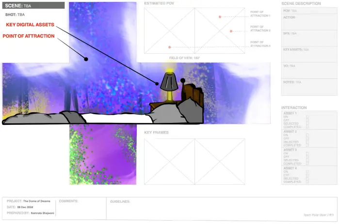
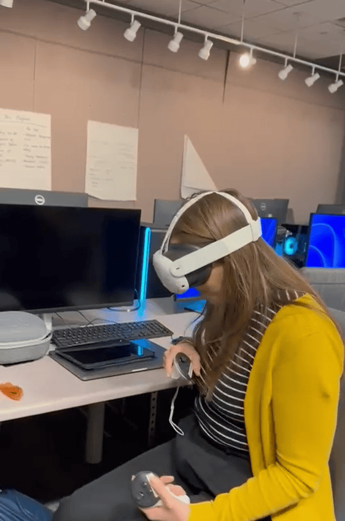
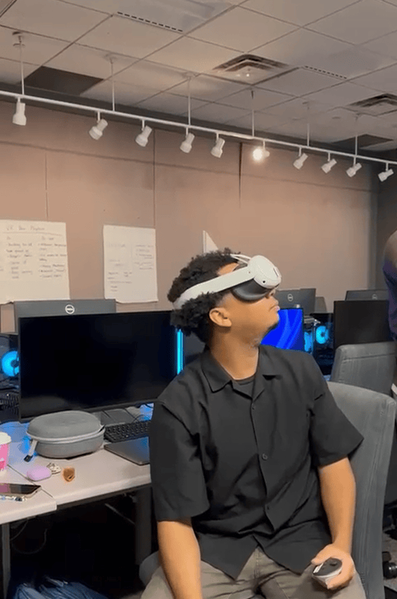

XR & Immersive
Dome of
Dreams
Dreams
VR Experience Design
Narrative Design
Unity 3D
Blender
AI-Generated Environments
The project began as a written narrative exercise and evolved into an immersive experience combining VR worlds, AR storytelling, and AI-generated content. Dome of Dreams is an experience inspired by the extremities of a popular series Black Mirror, exploring promise and dark consequences of technology. It lets you manipulate your own dreams.
The concept draws from a key observation: long before VR existed, humans have always sought ways to construct worlds different from their physical surroundings — through substances, spiritual practices, or something as involuntary as dreaming. Dome of Dreams takes that instinct and asks what happens when technology gives you total control over it.
The experience places users inside surreal, AI-generated dreamscapes projected in a 180-degree dome. They explore worlds built from prompts, experiencing the wonder of designed dreams. The narrative gradually reveals the dangers of dependency, reality detachment, and the eroding real-world presence.
Catherine doesn't sleep well. Most nights, her mind replays the same loop of a growing list of things she can't control. Medication does not work anymore.
The Dome of Dreams app, promises to let her design her own dreams. And it works. She sleeps. She dreams.
But the real world starts to feel thinner. Feedback stings harder. Phone calls feel unbearable. She catches herself building the dome in her head — at work, in traffic, mid-conversation. The app glitches.
Then one night, she sees the dome. And inside it — herself. Still asleep, while she is still awake.
She saw the most vivid visuals. Her family and loved ones in an imaginary world filled with camping, bonfires, barbecue dinner, and comfortable tents that she slept in, in the dream. She had the option of saving or deleting dreams from the Dream Library which would help the system to study her preferences and design personalised experiences.
Until one day, while she was driving to work — a homeless man slammed the window of the car. This was weird, this is exactly what the app blocks. It protects her from real world traumas. As the day passed, she forgets about it. Until it happens again in her dreams, when a bright sunny day at her childhood treehouse turns eerie and haunted.
Each world was ideating utilising notes from 'what would your dream world look like if you could customise it?' exercise with peers. Built from an AI-generated prompt, then refined with custom 3D assets and lighting. The environments were designed to feel enchanting at first, and then increasingly unsettling as the narrative progresses.





Mapping the full 360-degree user experience required a non-traditional storyboarding approach — accounting for every direction the viewer could look at any given moment.

The experience was tested with peers across multiple rounds, refining interaction timing, environmental triggers, and the balance between wonder and unease. The final version was exhibited publicly with VR headsets and AR entry points.

